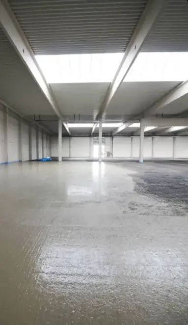

Ještě před deseti lety byl pohledový beton výsadou architektonických projektů a galerií. Dnes ho najdete v normálních bytech, rodinných domech a restauracích. Důvod? Jednoduchost, trvanlivost a jedinečná estetika, která se neomrzí. Navíc k němu existuje elegantní rekonstrukční alternativa — dekorativní betonová stěrka, která pravý pohledový beton věrně napodobí za zlomek ceny a bez bourání.
V tomhle průvodci najdete všechno, co potřebujete vědět, než se rozhodnete. Reálné ceny roku 2026, přehled aplikací, srovnání s alternativami (mikrocement, leštěný beton, dlažba s dekorem), inspiraci a praktické tipy od firmy, která ty povrchy léta realizuje.

Co najdete v článku
- Co je pohledový beton a proč frčí
- Dvě varianty: pravý beton vs. dekorativní stěrka
- Ceník pohledového betonu 2026
- Kde pohledový beton v interiéru funguje
- Pohledový beton vs. mikrocement vs. leštěný beton
- Modelové kalkulace (stěna, koupelna, celý byt)
- Styly, v nichž beton vyniká
- Jak probíhá realizace
- Péče a údržba v interiéru
- Výhody a nevýhody — otevřeně
- Časté otázky
Co je pohledový beton a proč frčí
Pohledový beton je betonová konstrukce (stěna, strop, schodiště, sloup) záměrně ponechaná v surovém stavu — bez omítky, bez obkladu, bez nátěru. Viditelné jsou stopy po bednění, jemné nerovnosti, občasné mikroprasklinky a přirozené rozdíly v odstínu. Právě tohle dodává každému kusu jedinečnost.
Trend vznikl v průmyslové architektuře druhé poloviny 20. století (brutalismus, Le Corbusier) a postupně pronikl do bytové a komerční architektury. V Česku se masovější nástup datuje kolem roku 2015 — dnes je pohledový beton běžný prvek v moderních rodinných domech, kavárnách, hotelech a designových studiích.
Proč je pohledový beton tak populární: Nevyžaduje další povrchovou úpravu — ušetříte náklady na omítání, malování, obklady. Je extrémně trvanlivý (desítky let bez renovace). Má akumulační schopnost — drží teplotu, ideální s podlahovým topením. Každý kus je originál — žádné dva povrchy nevypadají stejně. A hlavně: pasuje do moderních, industriálních i minimalistických interiérů.
Dvě varianty: pravý beton vs. dekorativní stěrka
Když v praxi mluvíme o "pohledovém betonu v interiéru", jde většinou o jednu ze dvou různých technologií. Liší se cenou, způsobem realizace a tím, kdy je lze aplikovat.
1. Pravý pohledový beton (lítý)
Klasická betonová konstrukce z transportbetonu, litá do bednění přesně podle projektu. Bednění určuje výsledný vzhled — systémové bednění dává rovnoměrný povrch, dřevěné prkna zanechávají texturu dřeva, speciální matrice vytvářejí vzory. Po rozbednění se povrch jen ošetří impregnací a je hotovo.
- Cena: 2 500–4 500 Kč/m² včetně bednění a lití
- Kdy: Pouze při novostavbě nebo hrubé stavbě
- Tloušťka: 15–30 cm (je to nosná konstrukce)
- Životnost: 50–100+ let
- Typické použití: Nosné stěny, stropy, schodiště u novostavby
2. Dekorativní betonová stěrka (imitace)
Tenkovrstvá stěrka na bázi cementu a polymerů, aplikovaná ve 2–5 mm na libovolný podklad (omítka, sádrokarton, stávající dlažba, dřevotříska). Výsledek vypadá jako pravý pohledový beton — stejná barevnost, stejná textura, stejná hapticka. Nejznámější značky: Bohemia Decor, Istinto, Topciment, Pandomo, Ultratop. Technologicky jde o příbuzného mikrocementu.
- Cena: 800–2 500 Kč/m² včetně materiálu a práce
- Kdy: Kdykoliv — novostavba i rekonstrukce
- Tloušťka: 2–5 mm
- Životnost: 15–25 let (pak obnova finální vrstvy)
- Typické použití: Akcentní stěny, koupelny, obývací pokoje, nábytek
Který zvolit? U novostavby s plánovaným industriálním stylem dává smysl pravý pohledový beton — je to "pojedno" se stavbou. U rekonstrukce nebo doplnění designového prvku do stávajícího interiéru je jedinou smysluplnou cestou stěrka. V 95 % realizací, které dnes řešíme v interiéru, jde o stěrkovou variantu.
Ceník pohledového betonu 2026
Ceny v roce 2026 reflektují rostoucí poptávku a omezenou nabídku kvalifikovaných řemeslníků. Dekorativní betonová stěrka je řemeslně náročná a ne každý podlahář nebo štukatér ji umí.
| Varianta | Cena za m² | Poznámka |
|---|---|---|
| Dekorativní stěrka — základní odstín | 800–1 400 Kč | Jednobarevná šedá, matný uzávěr |
| Dekorativní stěrka — standard | 1 500–2 200 Kč | Nejčastější realizace, ruční textura |
| Dekorativní stěrka — premium | 2 200–3 000 Kč | Designové vzory, více barevných přechodů |
| Pravý pohledový beton — stěna | 2 500–4 000 Kč | Systémové bednění, jen při stavbě |
| Pravý pohledový beton — strop | 3 000–4 500 Kč | Náročnější bednění, pracné |
| Pohledový beton s texturou (prkno, matrice) | 3 500–6 000 Kč | Speciální bednění, designové projekty |
| Pohledový beton — nábytek (stůl, umyvadlo) | 5 000–15 000 Kč/ks | Atypická výroba na míru |
Minimální zakázka: U dekorativní stěrky je obvyklé minimum 10–15 m² nebo fixní paušál 25 000–40 000 Kč. Pod touto hranicí rostou fixní náklady (doprava, ochrana okolí, zaškolení) na 3 000–5 000 Kč/m². Má-li být pohledový beton ekonomicky smysluplný, plánujte aspoň 15 m² souvislé plochy.
Kde pohledový beton v interiéru funguje
Akcentní stěna v obývacím pokoji
Nejčastější aplikace. Jedna zeď (zpravidla za TV nebo za sedací soupravou) v pohledovém betonu, ostatní v bílé nebo teplé malbě. Plocha typicky 10–20 m², cena 15 000–50 000 Kč. Výsledný kontrast působí efektně a jednoduše.
Kuchyně
Zástěna za linkou, celá jedna stěna, nebo dokonce kuchyňská linka. Beton je odolný proti mastnotě, s kvalitní impregnací snadno udržovatelný. Pohledový beton v kuchyni kombinovaný s dřevěnými prvky vytváří moderní skandinávský nebo industriální styl.
Koupelna
Bezespárové řešení, které eliminuje spáry, kde se drží plíseň. Podmínkou je kvalitní 2K hydroizolace pod stěrkou, finální voděodolný polyuretanový lak a správný spád ve sprchovém koutě. Pohledová betonová koupelna je dnes jeden z nejžádanějších designů u mladších investorů.
Chodba a vstupní hala
Výborná volba pro namáhaný prostor — beton nevadí bláto, voda ani posypové soli přinesené na botech. Po 20 letech chodba vypadá lépe než naběhaná malba.
Stropy
Pravý pohledový beton na stropě (viditelné otisky bednění) vytváří nezaměnitelný loftový charakter. U stěrkové imitace je to také možné, ale vyžaduje speciální technologii a je dražší (stropní aplikace ~30 % příplatek).
Schodiště
Pohledové betonové schody působí čistě a minimalisticky. Pro bezpečnost je nutné doplnit protiskluzové profily na hrany stupňů.
Nábytek a dekorace
Betonové stoly, umyvadla, lavabo, police, barové pulty, pracovní desky kuchyňských linek. Atypická výroba na míru, cena za kus 5 000–30 000 Kč podle velikosti a složitosti.

Pohledový beton vs. mikrocement vs. leštěný beton
Pro zmatené majitele nových bytů: tyhle tři pojmy se často pletou dohromady. Přitom jde o zásadně odlišné technologie s odlišným použitím.
| Parametr | Pohledový beton | Mikrocement | Leštěný beton |
|---|---|---|---|
| Primární použití | Stěny, stropy, nábytek | Stěny, podlahy, nábytek | Podlahy, průmysl |
| Cena za m² (vč. práce) | 800–4 500 Kč | 1 500–2 500 Kč | 800–2 500 Kč |
| Tloušťka | 2–5 mm (stěrka) / 150+ mm (pravý) | 2–3 mm | 80–150 mm |
| Aplikace na rekonstrukci | ANO (jen stěrka) | ANO | NE (musí se bourat) |
| Estetika | Surový industriální | Hladký bezespárový | Vysoký lesk, průmyslový |
| Spáry | Bez spár | Bez spár | Dilatační spáry |
| Životnost | 15–25 let (stěrka) / 50+ (pravý) | 15–25 let | 50+ let |
| Odolnost mechanická | Střední | Střední–vysoká | Nejvyšší |
| Hmotnost m² | ~5 kg (stěrka) | ~5 kg | ~200 kg |
Rychlé rozhodnutí: Pro stěny v rekonstrukci → pohledová betonová stěrka (nebo mikrocement, rozdíl je jen marketingový). Pro podlahu v novostavbě → leštěný beton. Pro podlahu v rekonstrukci bez bourání → mikrocement. Pro kombinaci stěna + podlaha → mikrocement na obojí pro stejný vzhled.
Modelové kalkulace pro typické projekty
Model 1: Akcentní stěna v obývacím pokoji 12 m²
Parametry: jedna stěna 4 × 3 m, dekorativní stěrka Bohemia Decor, matný uzavírací lak, aplikace na stávající sádrovou omítku.
| Položka | Cena (Kč bez DPH) |
|---|---|
| Příprava podkladu (12 m² × 200 Kč) | 2 400 |
| Výztužná síťka + lepidlo (12 m²) | 1 800 |
| Materiál stěrka (12 m² × 450 Kč) | 5 400 |
| Aplikace ručně (12 m² × 600 Kč) | 7 200 |
| Finální matný lak (12 m² × 200 Kč) | 2 400 |
| Doprava, výjezd, ochrana okolí | 2 500 |
| CELKEM bez DPH | 21 700 Kč |
| Cena za m² | ~1 810 Kč/m² |
| CELKEM s DPH (21 %) | ~26 260 Kč |
Co si za to pořídíte: Jedna výrazná designová stěna, která zcela změní charakter obývacího pokoje. Jde o investici, která vydrží 15–20 let bez nutnosti renovace. Srovnatelná akcentní stěna s obklady (velkoformátová dlažba s dekorem betonu) vyjde na 25 000–35 000 Kč, vyžaduje spáry a tudíž ztrácí celistvý vzhled.
Model 2: Koupelna 8 m² (podlaha + stěny ve sprchy a za vanou)
Parametry: 8 m² podlaha + 20 m² stěn, dekorativní stěrka s 2K hydroizolací, PU voděodolný uzávěr.
| Položka | Cena (Kč bez DPH) |
|---|---|
| Příprava podkladu (28 m² × 220 Kč) | 6 160 |
| Hydroizolace 2K (28 m² × 350 Kč) | 9 800 |
| Výztužná síťka (28 m²) | 4 200 |
| Materiál stěrka (28 m² × 500 Kč) | 14 000 |
| Aplikace ručně (28 m² × 700 Kč) | 19 600 |
| Finální PU lak voděodolný (28 m² × 300 Kč) | 8 400 |
| Doprava, výjezd, koordinace | 3 500 |
| CELKEM bez DPH | 65 660 Kč |
| Cena za m² | ~2 345 Kč/m² |
| CELKEM s DPH (21 %) | ~79 450 Kč |
Proč pohledový beton místo dlažby: Bezespárová plocha znamená žádná spárovací hmota, kde se drží plíseň. Pro koupelny s designovým záměrem jedinečný výsledek. Náklady jsou srovnatelné s velkoformátovou dlažbou kvalitní třídy (2 000–2 800 Kč/m² s prací), ale výsledný vzhled je zcela jiný.
Model 3: Celý byt 3+kk, 65 m² — stěny v industriálním stylu
Parametry: 3 akcentní stěny v obývacím pokoji, ložnici a chodbě, celkem ~50 m², premium dekorativní stěrka s pigmentovou variabilitou.
| Položka | Cena (Kč bez DPH) |
|---|---|
| Příprava podkladu (50 m² × 200 Kč) | 10 000 |
| Výztužná síťka (50 m²) | 7 500 |
| Materiál premium (50 m² × 650 Kč) | 32 500 |
| Aplikace premium (50 m² × 800 Kč) | 40 000 |
| Finální matný lak (50 m² × 220 Kč) | 11 000 |
| Doprava, výjezd, ochrana okolí | 4 000 |
| CELKEM bez DPH | 105 000 Kč |
| Cena za m² | ~2 100 Kč/m² |
| CELKEM s DPH (21 %) | ~127 050 Kč |
Co to znamená v kontextu rekonstrukce: Pro kompletní rekonstrukci bytu 3+kk v ceně 1–1,5 mil. Kč představuje pohledový beton 8–12 % rozpočtu. Investice se promítá do výsledné hodnoty nemovitosti — byty s kvalitním designovým řešením mají vyšší tržní cenu i rychlejší prodejnost.
Styly, v nichž beton vyniká
Pohledový beton není univerzální — pasuje do specifických stylů a nesedí do venkovských, rustikálních nebo historicky laděných interiérů. Tady jsou styly, kde funguje nejlépe.
Industriální loft
Původní domovina pohledového betonu. Kombinace betonu, oceli, starých cihel a dřeva. Ideální pro podkroví, loftové byty, galerijní prostory. Typické prvky: otevřené nosníky, přiznané instalace, velká okna.
Minimalistický moderní styl
Čistý beton v kombinaci s bílými stěnami, světlým dřevem a nulem ozdob. Skandinávská estetika obohacená o surový materiál. Ideální pro současné novostavby.
Japandi (Japan + Skandinávie)
Trend posledních 3 let. Pohledový beton v kombinaci se světlým přírodním dřevem (dub, jasan), textiliemi v teplých tónech, minimum nábytku. Zenový klid s industriálním základem.
Wabi-sabi
Estetika nedokonalosti. Pohledový beton s patinou, mikroprasklinkami, nerovnostmi — v wabi-sabi se oslavuje. Přírodní materiály, rukodělné předměty, nedokonalé tvary.
Brutalismus (pro odvážné)
Masivní betonové konstrukce jako hlavní designový prvek. Vyžaduje odvahu a dobré architektonické vedení — chyba se pozná rychle. Ne pro každého.
Co se nehodí: Rustikální styl (venkovský dřevěný nábytek, krajky, folklór), provence (pastelové barvy, kované prvky), klasický anglický styl (tapety, dřevěné obložení, těžké záclony). Do těchto prostředí beton působí cizorodě.
Jak probíhá realizace
Realizace dekorativní stěrky (rekonstrukce)
- Zaměření a ochrana okolí — zakrytí podlah, nábytku, technických prvků. Stěrka se těžko čistí z porézních materiálů.
- Příprava podkladu — broušení, odmaštění, odstranění všeho nesoudržného. U sádrokartonu dodatečné zpevnění.
- Penetrace — adhezní nátěr pro přilnavost dalších vrstev. Schnutí 4–6 hodin.
- Výztužná síťka — lepidlo na podklad + zapuštění skelné tkaniny. Prevence proti prasklinám.
- První vrstva stěrky — základní podbarvení, tloušťka ~1 mm. Schnutí 8–12 hodin.
- Finální vrstva stěrky — tady se rozhoduje o finálním vzhledu. Ruční textura, hlazení, tahy. Schnutí 24 hodin.
- Přebroušení — jemným smirkem (P220) pro sjednocení povrchu.
- Ochranný uzavírací lak/vosk — 2 vrstvy ve 24hodinovém odstupu.
- Vyzrávání — 7 dní před plným zatížením, bez tlakových kontaktů.
Celková doba realizace
Pro průměrnou akcentní stěnu 15 m² 4–5 pracovních dní s technologickými pauzami. Pro koupelnu 5–7 dní. Pro celý byt 2–3 týdny.
Péče a údržba v interiéru
Běžné čištění
- Stěny v obývaku/ložnici: 1× za 2–4 týdny vlhké stírání měkkým hadrem. Prach se usadí méně než na malbě.
- Koupelna: Běžné mytí neagresivním saponátem. Pozor na kyseliny (odstraňovače vodního kamene) — poškozují ochranný lak.
- Kuchyně: Okamžitě stírat mastnotu po vaření. Pravidelná aplikace ochranného vosku udržuje hydrofobní vlastnosti.
- Podlahy: Vysávání, vlhké stírání. Písek a štěrk na botech způsobují škrábance — doporučené rohože u vchodů.
Periodická údržba
- Obnova ochranného laku/vosku: Obývací pokoj a ložnice každých 3–5 let. Koupelna a kuchyně 1–2 roky. Podlahy 1–3 roky dle zátěže.
- Lokální opravy poškození: Drobné škrábance lze přelakovat. Větší poškození vyžaduje lokální aplikaci stěrky + sjednocení barvy (bývá viditelné).
- Kompletní renovace finální vrstvy: Po 15–20 letech je možné přebrousit povrch a aplikovat novou finální vrstvu — jako u dřevěné podlahy.
Výhody a nevýhody — otevřeně
Výhody
- Jedinečný vzhled — každý kus je originál, není to sériová výroba
- Bezespárový povrch — žádné spáry, kde by se držela špína nebo plísně
- Trvanlivost — 15–25 let u stěrky, 50+ let u pravého betonu
- Snadná údržba — stačí vlhký hadr a jemný saponát
- Kompatibilita s podlahovým topením — vysoká tepelná vodivost, akumulace
- Hygienický povrch — nepropouští vlhkost, nedržejí se na něm alergeny
- Rekonstrukční přátelský — stěrka lze aplikovat na jakýkoliv podklad
- Zvyšuje hodnotu nemovitosti — designový prvek oceněný trhem
Nevýhody
- Vyšší pořizovací cena — oproti běžné malbě nebo dlažbě
- Chladný vzhled — vyžaduje kombinaci s dřevem/textiliemi
- Obtížná lokální oprava — místa oprav bývají barevně odlišná
- Riziko mikroprasklinek — u pohybujících se podkladů (sádrokarton špatně přichycený)
- Řemeslná náročnost — špatně vybraný dodavatel = špatný výsledek
- Citlivost na kyseliny — nesmějí přijít do styku s odstraňovači vodního kamene
- Minimální zakázka — pro <15 m² vychází velmi drahá cena za m²

Časté otázky
Chcete pohledový beton ve vašem interiéru?
Pošlete nám rozměry, fotky prostoru a představu — připravíme cenovou nabídku s variantami do 24 hodin. Konzultace je zdarma a nezávazná. Realizujeme v Olomouckém, Jihomoravském, Moravskoslezském a Zlínském kraji.
Nezávazná poptávka →Řešíte spíš podlahu?
Projděte si průvodce mikrocementem nebo leštěným betonem — podobný vzhled pro podlahové aplikace.
Mikrocement podlaha →